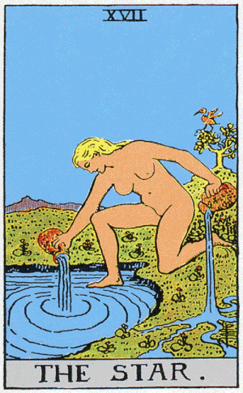
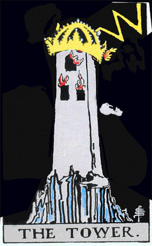

Experimenting with Augmented Reality
T-AR-ot is an ongoing collaboration with Patrick Warren to bring the Major Arcana to life with augmented reality. As a test case, we focused on highlighting three significant cards: The Star, Death, and The Tower. We were interested in the potential of AR in enhancing traditional fortune telling practice, and the exciting opportunities for immersive and interactive user experiences in the realm of divination.
This project uses Unity and Vuforia.
Motion Design
Experience Design
Unity



